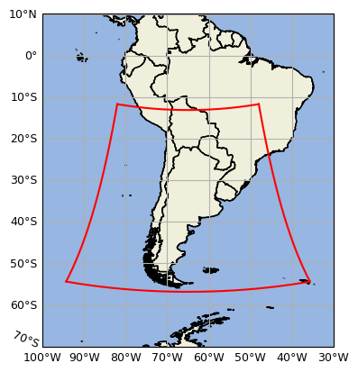

General information
The SMN-Arg operationally runs the high-resolution Weather Research and Forecasting (WRF) model for its main weather forecast activities. The version in use now is 4.0 and utilizes the dynamical kernel Advanced Research WRF (ARW) (Skamarock et al., 2019). The model runs with explicitly resolved convection, variable time step and was configured using the following parameterizations:
Microphysics: WSM6 (one momento - 6 classes)
Longwave radiation: RRTM
Shortwave radiation: Dudhia
Planetary boundary layer: MYJ (Mellor, Yamada, Janjic)
Land surface model: 4-layer NOAH (0-10 cm, 10-40 cm, 40-100 cm, 1-2 m)
Our 72-h forecasts are set to a 4-km horizontal resolution and 45 vertical levels, with a top level at 10 hPa. Initial and hourly boundary conditions are taken from NCEP-NOAA Global Forecasting System Model (GFS) at 0.25° horizontal resolution.
The forecast domain is defined in a Lambert conformal projection and covers southern South America, including Argentina and adjacent oceans, as shown below:

WRF-Arg domain delimited by red contour
More details about the model configuration can be found in this link.